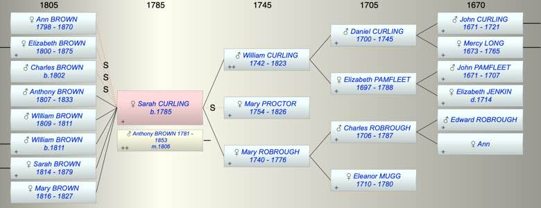
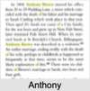

| [Index] |
| Sarah CURLING (1785 - ) |
|  |
|  |
| b. 12 Jun 1785 at City of London |
| m. 28 Jan 1806 Anthony BROWN (1781 - 1853) at St Botolph, London |
| Parents: |
| William CURLING (1742 - 1823) |
| Mary ROBROUGH (1740 - 1776) |
| Children (5): |
| Anthony BROWN (1807 - 1833) |
| WIlliam BROWN (1809 - 1811) |
| WIlliam BROWN (1811 - ) |
| Sarah BROWN (1814 - 1879) |
| Mary BROWN (1816 - 1827) |
| Events in Sarah CURLING (1785 - )'s life | |||||
| Date | Age | Event | Place | Notes | Src |
| 1776 | Death of mother Mary ROBROUGH (aged 36) | Southwark | Note 1 | ||
| 12 Jun 1785 | Sarah CURLING was born | City of London | Note 2 | ||
| 28 Jan 1806 | 20 | Married Anthony BROWN (aged 25) | St Botolph, London | Note 3 | |
| 04 Jan 1807 | 21 | Birth of son Anthony BROWN | City of London | Note 4 | |
| 02 Feb 1809 | 23 | Birth of son WIlliam BROWN | City of London | Note 5 | |
| bef 1811 | 26 | Death of son WIlliam BROWN (aged 2) | |||
| 02 Oct 1811 | 26 | Birth of son WIlliam BROWN | City of London | Note 6 | |
| 26 May 1814 | 28 | Birth of daughter Sarah BROWN | City of London | Note 7 | |
| 11 Mar 1816 | 30 | Birth of daughter Mary BROWN | City of London | Note 8 | |
| 1823 | 38 | Death of father William CURLING (aged 81) | |||
| 1826 | 41 | Death of step mother Mary PROCTOR (aged 72) | Note 9 | ||
| 1827 | 42 | Death of daughter Mary BROWN (aged 11) | City of London | Note 10 | |
| 1833 | 48 | Death of son Anthony BROWN (aged 26) | City of London | Note 11 | |
| 15 May 1853 | 67 | Death of husband Anthony BROWN (aged 72) | Battersea, London | Note 12 | |
| 11 Jan 1870 | 84 | Death of step daughter Ann Good BROWN (aged 71) | Clapham Rise London | Note 13 | |
| 09 Jun 1875 | 89 | Death of step daughter Elizabeth BROWN (aged 74) | Amberley, Glos | Note 14 | |
| 03 May 1879 | 93 | Death of daughter Sarah BROWN (aged 64) | Note 15 | ||
| Created on a Mac™ using iFamily for Mac™ on 8 Oct 2023 |